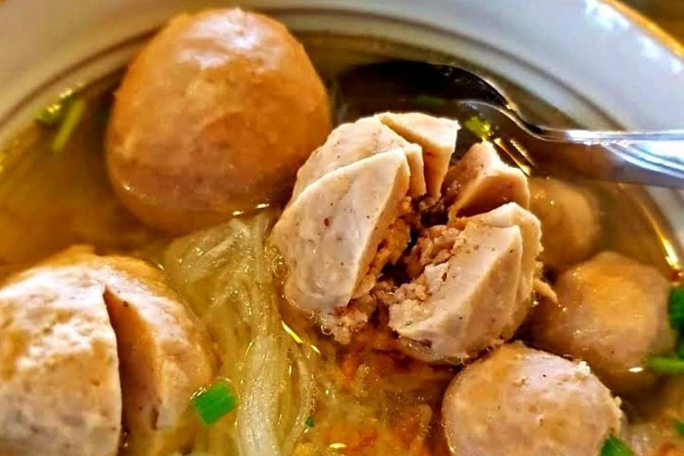
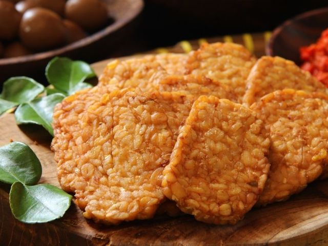
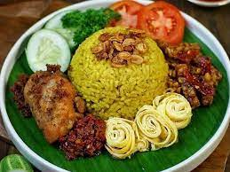
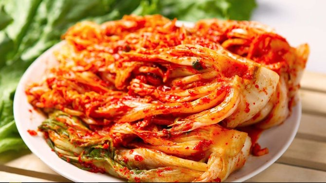
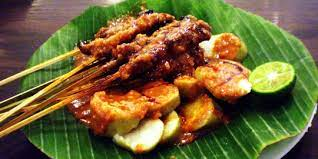
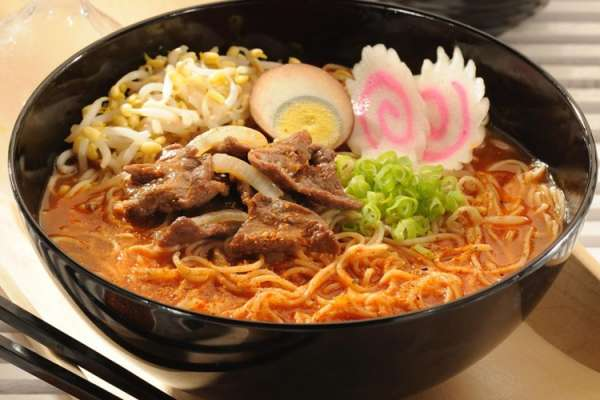

Selamat Datang di blog Seputar Makanan
web berisi informasi mengenai makanan dari berbagai negara
Ayam Goreng
Ayam goreng adalah hidangan Indonesia yang merupakan ayam yang digoreng dalam minyak goreng.

Bakso
Bakso atau baso adalah jenis bola daging yang lazim ditemukan pada masakan Indonesia. Bakso umumnya dibuat dari campuran daging sapi giling dan tepung tapioka, tetapi ada juga bakso yang terbuat dari daging ayam, ikan, atau udang bahkan daging kerbau.
LATEST POST
Bakso
Bakso atau baso adalah jenis bola daging yang lazim ditemukan pada masakan Indonesia....
Read More





Sate
Sate atau satai adalah makanan yang terbuat dari daging yang dipotong kecil-kecil dan ditusuk....
Read More
